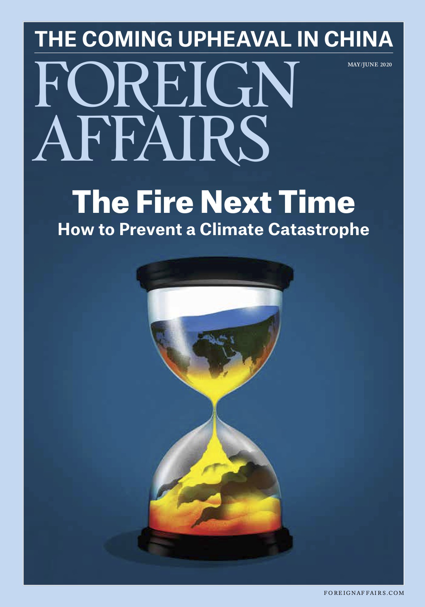

收录于合集

编者按
“是时候抛弃纸上谈兵的大战略了。”本文作者认为，随着世界权力格局变化，大战略的线性思维已不再适合当下无极和无序的世界体系。多元文化主义的兴起和民粹主义的反弹正在侵蚀美国人的身份认同，而政治两极分化正在瓦解美国国内的政治机构。放弃大战略的幻想，采取分权和渐进主义的方式，改善美国的对外政策表现才是当务之急。
作品简介
【作者】 丹尼尔·德雷兹纳（Daniel W. Drezner），塔夫茨大学弗莱彻法律与外交学院国际政治学教授；罗纳德·克雷布斯（Ronald R. Krebs），明尼苏达大学政治学教授；兰德尔·施韦勒（Randall Schweller），俄亥俄州立大学政治学教授兼现实主义外交政策研究计划主任。
【编译】 石雨宸（国政学人编译员，南开大学周恩来政府管理学院）
【校对】 姚寰宇
【排版】 杨 洋
【来源】 Daniel W. Drezner, Ronald R. Krebs & Randall Schweller, The End of Grand Strategy：America Must Think Small, Foreign Affairs, 99 (3), 107-117.

期刊简介
 《外交事务》（Foreign Affairs），创刊于1922年，是美国外交关系委员会发布的国际关系和美国外交政策的美国杂志，被誉为“美国最具影响力的外交政策杂志”之一。根据2018年的期刊引文报告, 该期刊的影响因子为4.390，在“国际关系”类别的91种期刊中排名第3。
大战略的终结：美国必须从小处着眼
The End of Grand Strategy：America Must Think Small
内容提要
无论唐纳德·特朗普在国际关系领域都做了什么，他的一项标志性成就都不可否认：让大战略再次变得有趣。数十年来，制定美国外交政策的两党精英都信奉自由国际主义，认为美国应该维持并传播一个促进市场自由、政治开放和多边合作的全球秩序。但特朗普一再抨击自由国际主义的关键支柱，包括质疑北约的价值、破坏贸易协定、侮辱盟友等等。随着自由国际主义的基本假设被推翻，围绕着美国大战略的辩论再次兴起，从左翼到右翼的各派人士都纷纷加入了这场争论，主张紧缩和克制的声音被广泛接受，美国正难得一见地就推进共同议程形成国内联盟。
即便如此，大战略的概念本身已经成为一种幻想。
大战略是能够使手段与目的相匹配的路线图，当政策制定者对权力分配有清晰的认识，对国家目标和身份认同有坚定的国内共识，并且存在稳定的政治和国家安全机构时，大战略在可预测的领域内能够发挥巨大效用。然而到2020年，这些都不复存在。权力性质的变化及其在国际体系中的扩散，使美国更加难以决定自己的命运。多元文化主义的兴起和民粹主义的反弹侵蚀了美国的共同话语和身份认同；政治两极分化正在瓦解美国国内的政治机构，这意味着每一届新政府上台后都可能完全推翻前任政府的所有做法；反建制浪潮削弱了政策辩论的基础，并放松了对产生一致性行政权力的审查。本文作者们一致认为，这些新的因素使制定或推行大战略的努力代价高昂，并可能产生反作用，这一切都是无效且短暂的。各界应“多研究些问题，少谈些主义”。基于个案制定的政策可能优于，或者至少等同于，大战略指导下的政策。
在世界水深火热时，讨论大战略只是纸上谈兵而已。因此，现在是时候离开大战略的指导来采取行动了。 **
**
文章导读
01
权力问题
POWER PROBLEMS
成功的大战略必须基于对全球权力分配格局的准确认识，夸大敌人或低估威胁的做法可能导致适得其反的政策选择。在过去的十年里，许多人攻击美国的自由国际主义战略的一个原因就是，他们认为这一战略没能意识到中国的崛起。全球政治中的权力已不如从前。 国家行使权力的能力、方式、目的，以及掌握权力的主体都发生了根本性的变化，其结果是一个无极（nonpolarity）和无序的新兴世界。 在这个新兴世界中大战略并非行之有效。当然，很多东西还一如从前。人们仍然主要根据国籍来定义自己的身份；各国仍在争夺对关键资源和重要航道的控制权，并在领土和地区影响力上发生冲突；各国仍然寻求最大化自身的财富、影响力、安全感、声望和自主权。 不过相比其它，有两件事是当今的大国最为看重的：追求财富和避免灾难性的军事竞赛。 各国清楚，通过建设知识经济和促进技术创新与全球网络的内在联系，能够在国际权力与声望的阶梯上不断攀升。当权力被用于建设性目的时，就变得越来越具体，无法在领域间转换。军事力量很少能达到目标或解决问题，干预通常只会让糟糕的情况更糟，两次海湾战争之间的巨大差距说明了这一点。权力不再像过去那样可以被简单替代，所以也难怪特朗普政府将安全和情报合作与重新谈判的贸易协定相结合的努力最终失败了。 最后，权力在国际体系中的扩散正在创造一个“无极化”（nonpolar）的世界。 许多人指出中国和其他竞争对手的崛起，认为世界正在回到多极化（或在更多极化的背景下回到两极），但这种观点低估了当前正在发生的结构性转变。国际关系将不再由一个、两个甚至几个大国主宰，经济和军事实力不再像过去那样发挥绝对影响。弱者和强者会遭受同样的国家瘫痪，也享有同样的行动自由。此外，从地方民兵组织到非政府组织再到大公司，每一个拥有并行使权力的新行为体与国家的竞争都在与日俱增。如今，能够声称对其领土边界内的武力保有垄断地位的国家仍是少数，采取暴力的非国家行为体已不再是次要角色，所有这些都在重新定义全球的权力。 权力的变化产生了一个以熵（entropy，即缺乏秩序）为标志的世界。一个由数十个权力中心组成的世界将极难驾驭和控制。 在新的全球失序中，即使是拥有庞大经济和军事力量的国家可能也无法随意摆布其他国家。现代国家无论在军事和政治上多么强大，几乎都无法影响那些在无政府地带上蓬勃发展的暴力组织，这些行为体没有明确要威胁或摧毁的目标，许多行为体的动机甚至是无法谈判的问题。更糟糕的是，暴力已成为许多社会凝聚力的来源。随着传统权力不再像过去那样产生影响力，全球秩序和合作将出现短缺，国际关系将日益由混乱的临时安排组成。这种危险不是来自大国之间的热战或是围绕知识产权与汇率操纵的激烈对抗，而是来自地缘政治、货币、贸易或环境问题上的僵化冲突。考虑到战争的巨大代价，那些不能在谈判桌上解决争端的大国再也没有以战争解决争端的选择余地。当政治安排实现时，这些危险将暂时消失，但一段时间后又会重新。 大战略并不适合一个无序的世界，大战略思维是线性的。当今的世界是相互作用、错综复杂的，两点之间最直接的路径并不是一条直线。 要在这种环境下成功运作，行为体必须不断改变其战略。
02
分裂的国家
A NATION DIVIDED
一个可持续的大战略还必须建立在关键政治群体的共同世界观之上。 如果每一届新政府上台时对全球挑战和机遇的理解都截然不同，那么任何战略都无法持久。每一届新政府都会撕毁前任的政策，粉碎一项大战略的构想。 遏制战略之所以能够持久，是因为从杜鲁门到里根的每一位美国总统基本上都坚持该战略对全球事务的基本愿景。而克林顿、小布什和奥巴马都信奉自由国际主义的变体。如今这种共识已不复存在。过去的半个世纪里，人们越来越意识到，主导叙事可能是压抑的，它们往往反映了当权者的利益和经历，并压制了边缘群体的声音。上世纪70年代初越南战争即将结束时，越来越多的人怀疑社会应该植根于某种共同身份，多元文化主义（至少在美国）开始占据主导地位，成为一个以公平和包容的方式管理多样性的战略。这在大多数美国人眼中是无害甚至是有益的。但也造成一个后果：今天的美国人缺乏共同的国家叙事。随着人们渴望通过一个共同叙事来理解他们的世界，民族主义的持久力量开始显现。长期以来美国的文化保守主义者一直试图定义一种文化核心，并发动了反对双语教育、将英语作为官方语言的运动，迄今为止这在美国半数以上的州都取得了成功。文化保守主义者指责美国正在分崩离析，指责新移民拒绝接受国家信条。自由主义者在美国例外论（American Exceptionalism，即认为美国与其他国家完全不同）上举棋不定。2009年，奥巴马宣称：“我相信美国例外论，就像我怀疑英国人相信英国例外论，希腊人相信希腊例外论一样。”相比之下，保守派则倾向于例外论。与民主党人不同的是，特朗普对民族主义语言的运用非常自如，尽管他以这种语言方式排斥了近一半的美国人。大战略以安全叙事为基础，描述了全球政治的主要参与者是谁，他们已经做了什么和将要做什么，以及事件发生的全球背景。有关大战略的辩论通常围绕这些叙事元素展开，例如那些主张深度介入（deep engagement）的人认为，美国和全球安全不可分割，而呼吁克制（restraint）的人则持相反观点。 但在缺乏共同国家叙事所提供的政治修辞的情况下，难以产生一个能与不同选民都产生共鸣的大战略。 在不同政策领域实施同一个特定战略，并在一段时间内维持该战略将变得更加困难。美国叙事分歧的一个显著表现是美国政治的两极分化，而不仅是敏感的国内问题上。 美国人按党派划分一系列广泛的对外政策问题，包括气候变化、反恐、移民、中东、武力使用等问题，这并不是讨论大战略的有效环境。 首先，这削弱了专家意见的效用。在公众对这些问题尚未形成两极分化时，专家的共识可以改变公众对一些问题的态度。 然而，当公众已经出现党派分歧时，两极分化只会让精英阶层的分歧更加严重。来自无党派人士的专家意见只会让党派人士更加坚定自己先前的信仰。 其次，政治上的两极分化使学习也变得困难。在两极分化的政治环境中，害怕被追责的一方并不会接受自身政策已经失败的事实。正如共和党人始终坚持认为伊拉克战争是多年来的一次胜利。 为了支持其领袖，各党派人士都有歪曲事实以符合本党论点的显著动机，从而使外交政策的讨论失去了事实公认的基础。 最重要的是，两极分化意味着，任何政党的大战略只有在它控制了行政部门的前提下才能维持。国会和法院已经授予总统在国家安全叙事上近乎垄断的地位，因此一位总统可以从根本上改变美国的大战略，对于另一党的下任总统也是如此。
03
人民与专家
THE PEOPLE VS. THE EXPERTS
大战略需要以坚实的制度为后盾的强大思想共识，帮助政策制定者逐步纠正方向。即使是持久的大战略也必须应对战略环境的变化，即使是经过深思熟虑的战略也会导致政策失误。 美国在冷战期间也犯了一些外交政策上的错误，但当权者与批评者之间、行政部门与国会之间的拉扯，最终阻止了美国激进主义的过度行为，避免了过度克制。在过去的半个世纪里，美国公众对联邦政府、媒体和其他所有主要公共机构的怀疑日益增加。美国人的不信任延伸到了外交政策机构，这源于美国的外交政策精英们大多支持在阿富汗、伊拉克和利比亚使用武力，而这些干预不算成功。2008年的金融危机和“阿拉伯之春”让外交政策精英们措手不及。就此而言，对某些专家的合理怀疑是有道理的。然而，太多的怀疑也可能有害。对外交政策专业知识价值的质疑会破坏一个健康的大战略思想共识。正如克里斯·海耶斯（Chris Hayes）所言，如果专家作为一个整体失去信誉，那么我们将会面临无穷无尽的江湖骗术。此外，争论中的新加入者在一定程度上是通过抨击已有的大战略共识来推进自己论点的。对外交专业知识尊重的消失只是21世纪最大政治叙事的一部分而已， 民粹主义正作为主流政治的一部分在整个西方扩散。 它并非昙花一现，其崛起源于经济混乱以及文化反应的政治。而民粹主义让大战略变得毫无意义。所有形式的民粹主义的核心都是一个简单的政治形象。民粹主义领导人宣称存在道德纯正的民族，与腐败的精英阶层形成对比，并声称只有自己了解人民的意愿，因此民粹主义政治倾向于威权主义。 民粹主义领导人通过自己对人民的坚决立场，宣称其他任何政治进程都不能比自己更好地代表人民。由此，批评者变成了敌人，宪法约束变成了民主的障碍，多数人的暴政变成了美德。
民粹主义并不适合大战略。首先，民粹主义加剧了内部分歧。民粹主义的设计是两极化的，缩小了所谓真实人民的范围，因此在作为领土和法律实体的国家内部就不可能存在统一。其次，民粹主义政客经常以正义的愤怒动员人民反对敌人。当激烈的言辞充斥舆论，对危机的情绪化反应可能会取代理性策略。领导人很难在冒犯和报复的气氛中采取和解策略，因此战略变得不那么灵活。最后，民粹主义将权威集中在魅力型领导人身上。民粹主义剥夺了官僚和某些机构的权力，而这些机构可以约束变化无常的统治者、阻止极端的决策。因此， 民粹主义政权的政策事实上是领导人的意识形态或突发奇想的反映。 如果这位民粹主义领导人确实在追求某种类似于大战略的东西，这种战略也不会比其统治更长久。
04
敲响大战略的丧钟
WE COME TO BURY GRAND STRATEGY
大战略已死。充斥着不确定性的“无极化”全球政治使其更加无用，甚至变得危险，日益分裂的国内政治使美国更难实施连贯一致的大战略。 对专业知识的普遍不信任已经超越了对历史教训和未来战略的理性辩论。民粹主义破坏了原本阻止战略巨变的制度制衡。 美国的战略思想家们仍处在为大战略而悲伤的早期阶段，许多人仍在否认事实。然而，是时候进入悲痛过程的最后阶段了：接受现实。
在没有大战略的情况下前进，需要遵循两项原则：分权（decentralization）和渐进主义（incrementalism）。 高度的不确定性需要分散但相互协调的决策网络。智慧的企业会分散权力和责任，鼓励员工通过团队合作解决问题，并采取非正式的方式分配任务。各国政府应以同样的方式组织其对外政策机制。重视区域知识和专家意见，是处理问题点和在危机扩散之前化解危机的较好方式。
组织变革必须与文化变革并行：重视自下而上实验方法的优点。 大战略假定过于灵活的代价大于过于僵化的代价，因此在中心进行的精心规划将产生最佳效果。但是，当变化迅速而不可预测地发生时，这是不明智的。渐进主义是更安全的选择，它不需要把所有的鸡蛋放在一个篮子里，也不会一蹴而就，但渐进主义确实避免了灾难性的损失，可以快速适应变化的环境。实际上，这意味着将责任从白宫移交给战区指挥官、特使和专题专家。相比过去许多届政府把更多决策权集中在白宫，这意味着美国将要采取完全相反的方针。有抱负的国家安全顾问，不应将成为下一个乔治•凯南(George Kennan)作为目标。在不久的将来，寻找一位持久的遏制战略的继承者将既不重要也不可能，改善美国的外交政策表现才是当务之急。
 本文由国政学人独家编译推荐文章观点不代表本平台观点
本文由国政学人独家编译推荐文章观点不代表本平台观点

**** 添加 “ 国小政” 微信，获取最新资讯 ****
**
**


好好学习，天天“在看”